דרך הכלב 🐕
ברוכים הבאים ל"דרך הכלב" - חלל המציע גישה חדשנית ומגוונת לכלבנות טיפולית
 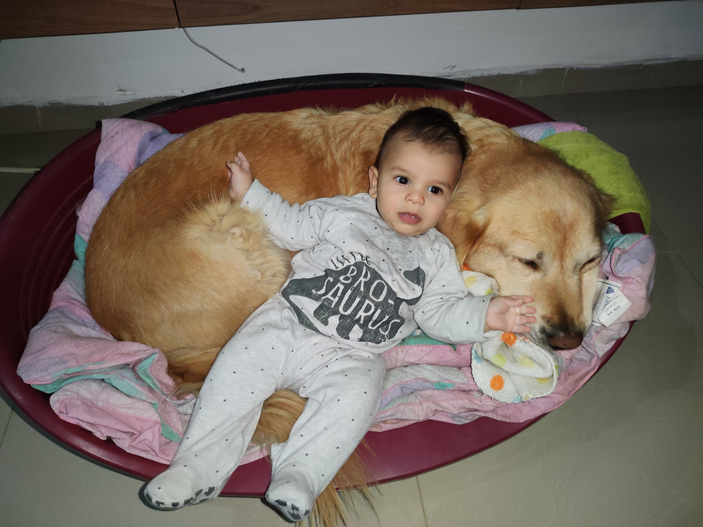
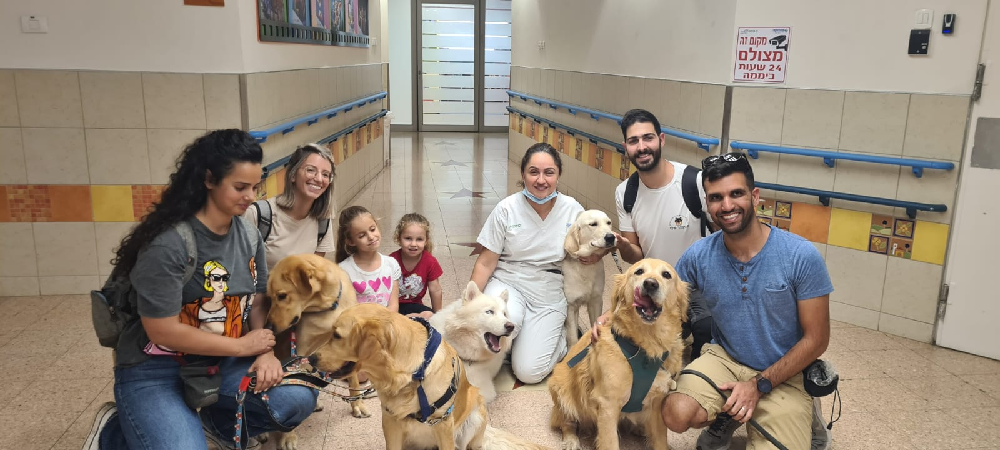
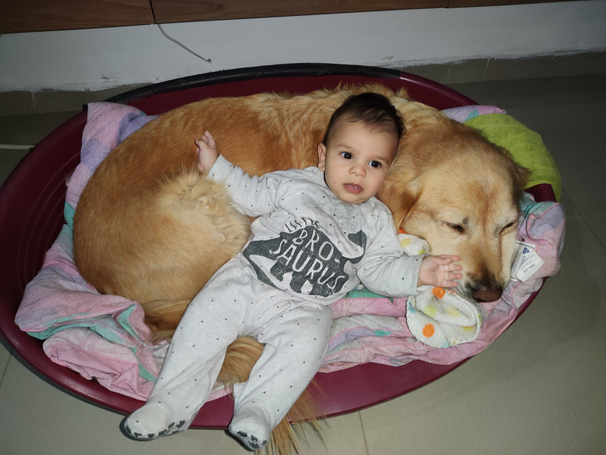
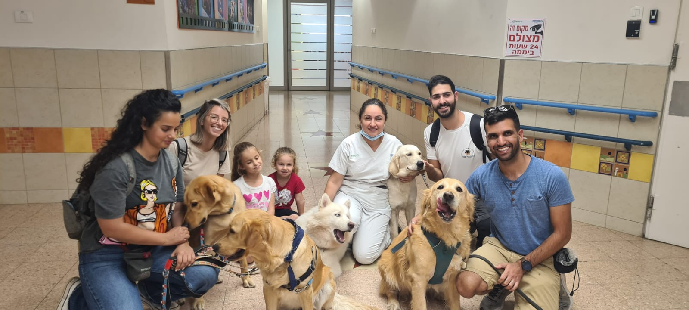
 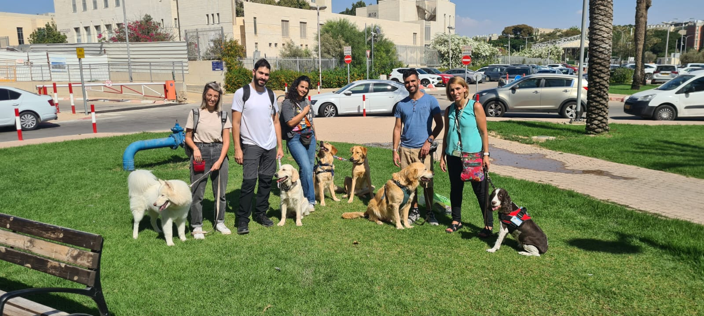
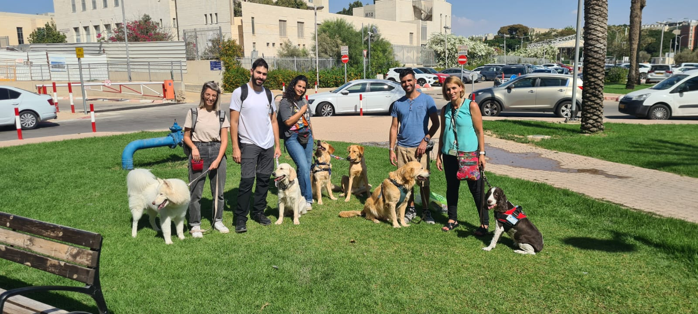

 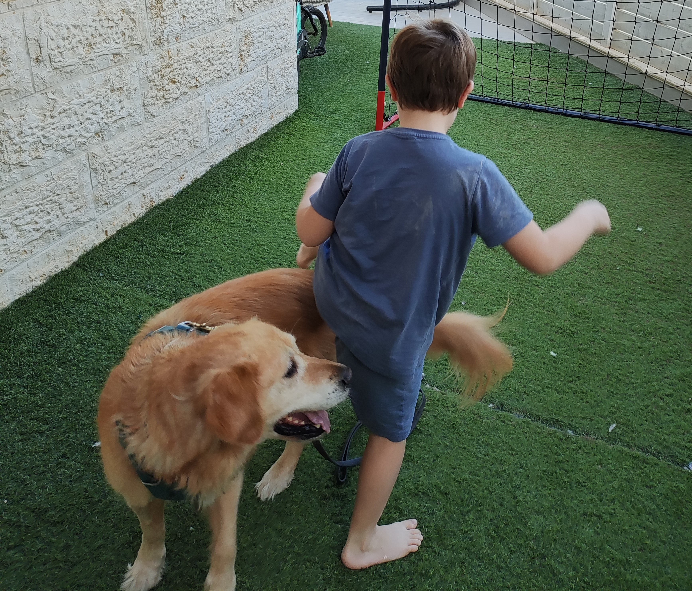
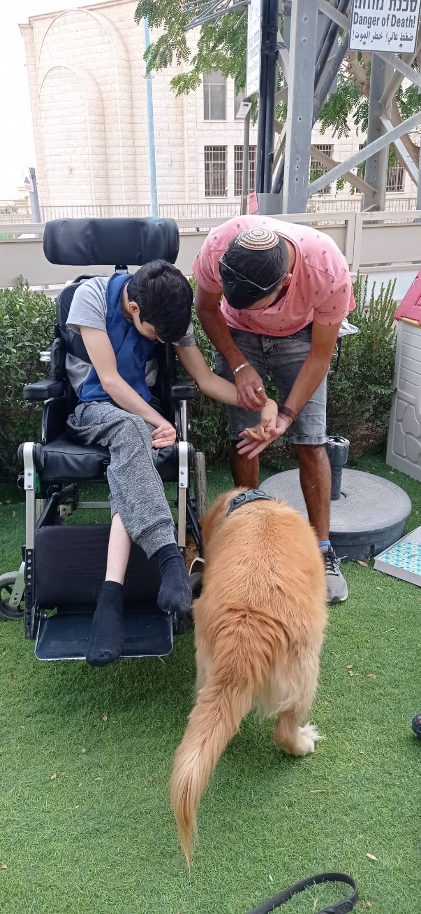
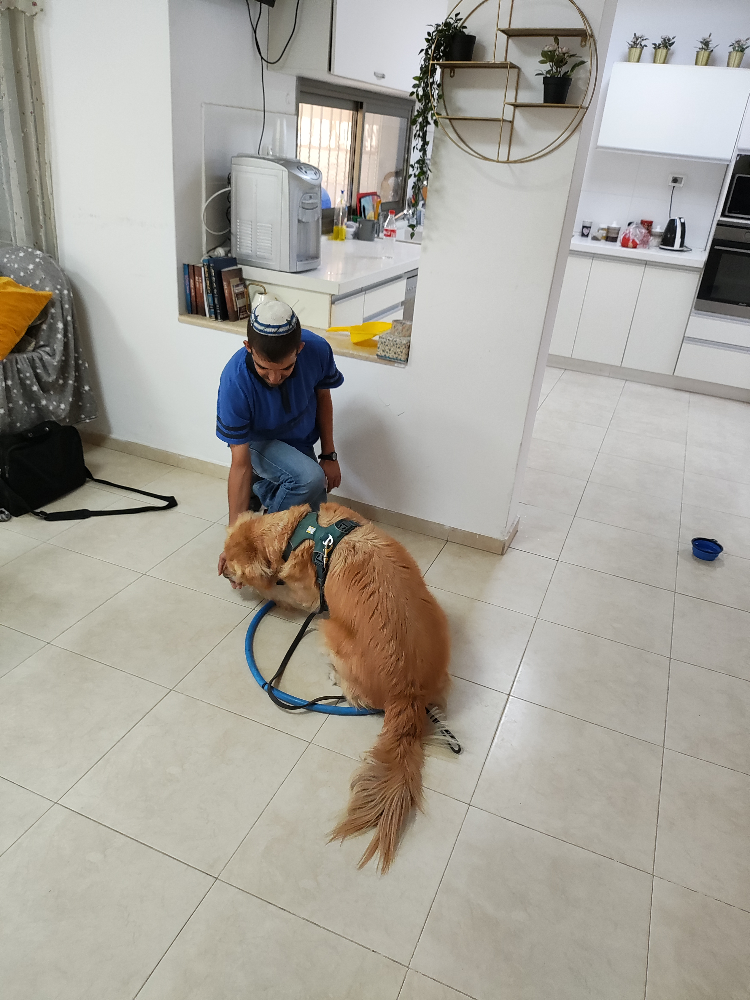
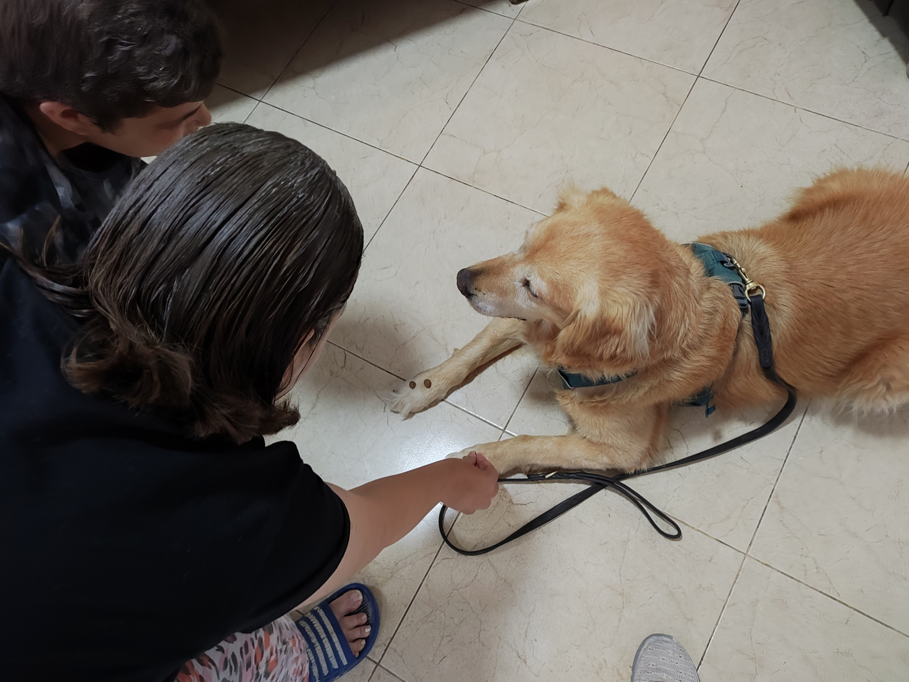
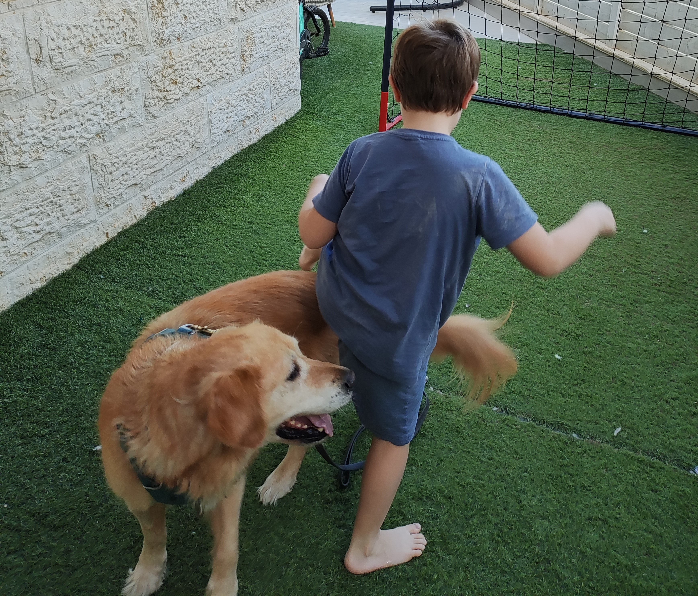
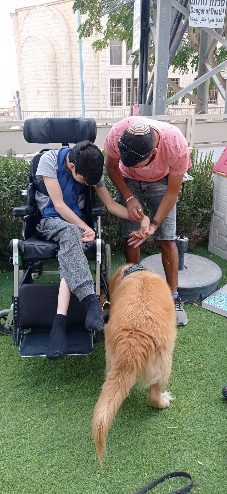
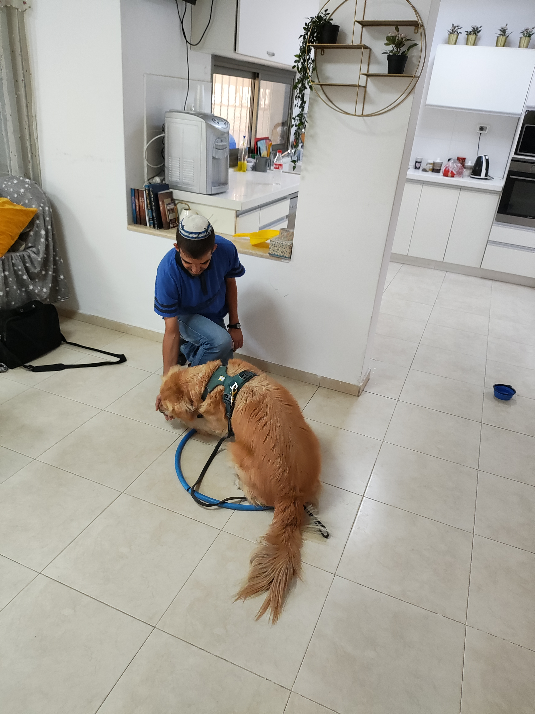
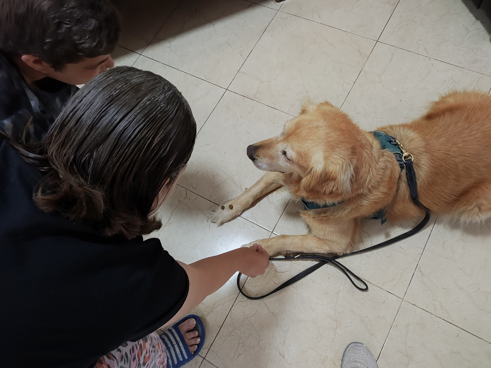
שירותינו 🌟
ב"דרך הכלב", אנו מאמינים בכוח של החיבור בין אדם לכלב ובפוטנציאל שלו לשינוי ולטיפול. אנו מציעים מגוון שירותים ומוצרים:
- כלבנות טיפולית: הפעלת כלבים מאומנים במטרה לסייע לאנשים מכל הגילאים ורקעים.
- תכניות מותאמות אישית: פיתוח תוכניות טיפוליות מותאמות לצרכים ספציפיים של קבוצות או פרטים.
- קלפי משחק חינוכיים וטיפוליים: ערכות קלפים מיוחדות המשלבות תרגול כישורים חברתיים, רגשיים וקוגניטיביים דרך משחק.
צרו קשר 052-4013354 📞
לקבלת פרטים נוספים על השירותים והמוצרים שלנו, ניתן ליצור קשר באחת הדרכים הבאות:
שלחו לנו הודעה 📲 דברו איתנו 📧עקבו אחרינו 🌍
הצטרפו לקהילתנו ועקבו אחר העדכונים האחרונים:
אנו מזמינים אתכם להיות חלק מהמסע שלנו ולחוות את ההשפעה העצומה של כלבנות טיפולית על חיי אנשים.